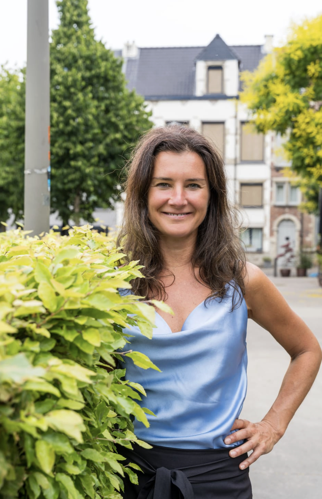
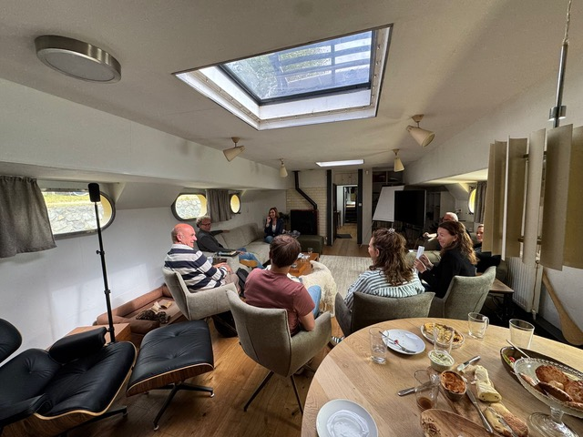

Drie wegen naar een nieuwe koers.

1
Reflectie & Persoonlijke Koers
Onder begeleiding van Ruth Lachaert. Ontdek patronen, creëer bewustzijn en vind de koers die echt bij je past.

2
Teamdynamiek & Leiderschap
Teams die vastlopen of willen groeien, vinden aan boord hun ritme terug. De dynamiek van het schip maakt rollen en communicatie direct zichtbaar. Geen rollenspellen, maar echt werken met de elementen.

3
Vakmanschap & Meesterschap
Voor fijnproevers van het varen. IJsbrand Overmaat deelt 30 jaar expertise. Leer een schip van 38 meter beheersen met precisie en rust. Een masterclass, voorbij de basisvaardigheden.